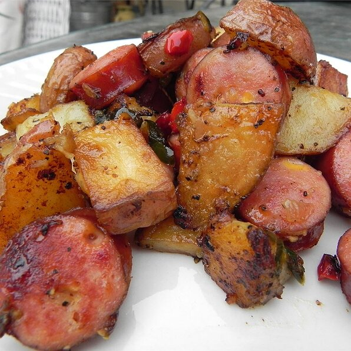

S.O.P.P.

S.O.P.P. stands for sausage, onions, potatoes and peppers. This is a
simple one-pot meal that tastes delicious, and is easy to whip up for your
family in a pinch.
Ingredients
- 2 tablespoons vegetable oil
- 6 potatoes - peeled and cubed
- 2 pounds smoked sausage, sliced
- 1 onion, sliced
- 2 green bell peppers, chopped
Steps
-
Heat oil in a large skillet over medium heat. Place the potatoes in the
skillet, cover and simmer, turning occasionally, until potatoes are
almost tender and a little browned, about 10 minutes.
-
Stir in the sausage, onion and peppers. Cover and cook for about 5 more
minutes, or until onion and peppers are to desired tenderness.